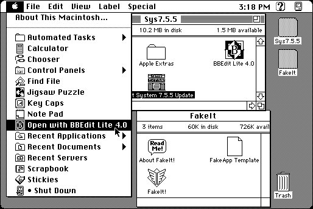

Download
FakeIt_1.01E.zip (33K) FakeIt! 1.01 repackaged into a zipped hfs disk image and checksum file. The disk image can be mounted with Mini vMac.
FakeIt_1.01E.hqx (41K) FakeIt! 1.01 in the original format.
copyright: Takahiro Sumiya
mod date: Mar 14, 1996
license: freeware
last known url
(gone)
Can create a small application which launches another application and tells it to open the documents currently selected in the Finder. So, for example, you can have a command in the Apple menu to open the selected documents with BBEdit. For System 7.5 or later.

If you find these downloads useful, please consider helping the Gryphel Project, which hosts them.
Here are the md5 checksums for the downloads, signed with Gryphel Key 5:
--------- GRY SIGNED TEXT --------- ed8d46a68e1ac2109223f46b0053338c FakeIt_1.01E.zip f9d7e1b6c10ffc79fa6c442c58146f33 FakeIt_1.01E.hqx ------- BEGIN GRY SIGNATURE ------- Gry/4Xa8CFcUzxdN/LyT/8E7OOtbYQk/jUePfg8ohsEArIEeiY7Lw/MQ0GnbqHQA 6yNAalcdvQwJrQVlshjI0xUr+UYqF+ikJH6zcY2VXvSG3l7996M2ECLI0YTlttH8 sC/k5L03XexxNz28hFU/XoVdw8Cu52AbVhrZ90bZMrFEkl0tvEsHW9mXUpxzi3fv -------- END GRY SIGNATURE --------